ركز معي هون عشان تفهم الحكاية من أولها.. بسنة 1966، كان في بروفيسور بـ MIT
اسمه Seymour Papert، قرر يعطي طلابه "مشروع صيفي" صغير.
السؤال كان بسيط: "اشبكوا كاميرا بالكمبيوتر وخلوه يوصف لنا شو شايف
بالصورة!". الطلاب فكروا إنهم رح يخلصوا الموضوع بشهرين ويروحوا يعطلوا.. بس الصدمة إنهم اكتشفوا
إن عين البشر مش مجرد "عدسة"، هي مرتبطة بدماغ بخزن خبرة سنين وتطور ملايين السنين.
هااض المشروع الصيفي "البسيط" استمر 50 سنة من البحث والمحاولات الفاشلة،
لغاية ما وصلنا اليوم إن الكمبيوتر صار "يشوف" ويحلل أحسن من البشر بكثير بمجالات معينة. إحنا بهاي المادة،
رح نمشي بنفس الطريق اللي مشوه، ونعرف كيف حولنا "الغلبة" هاي لذكاء اصطناعي جبار.
🏠 العودة للوحة التحكم
QudahWay / CV / Intro
QudahWay CV
Computer Vision | المصدر الشامل والاحترافي للتميز
القصة وكيف بلش السحر:
Teaching Machines to See
Slide 03
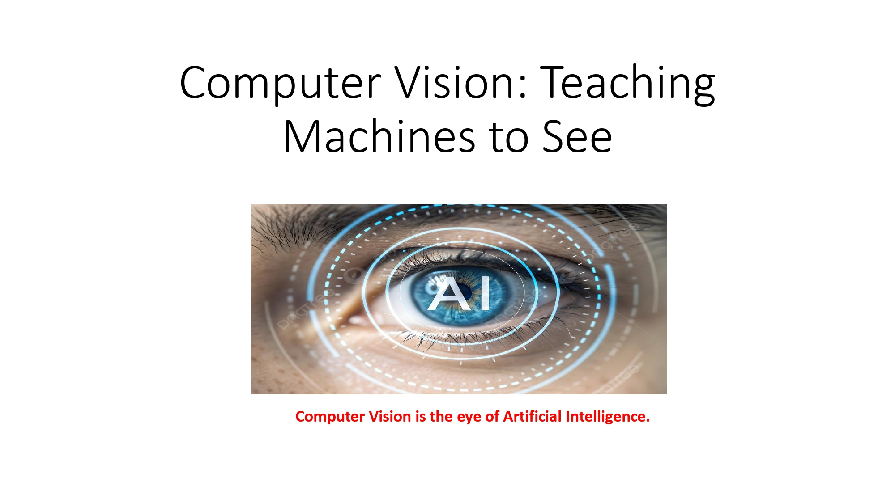
جوهر المادة (الرؤية كـ عين للذكاء):
📍 ليش الـ CV هو "العين"؟
الذكاء الاصطناعي AI بدون رؤية بكون كأنه عقل مفصول عن العالم
الخارجي.. الـ CV هو اللي بعطي هااض العقل القدرة إنه "يدرك" البيئة،
يحلل الأشكال، ويفهم المسافات.
📍 الهدف الأساسي:
الهدف مش بس إنه الكمبيوتر "يصور"، الهدف إنه يفهم شو بالصورة
(Interpret and Understand). إحنا "بنعلّمه" يشوف زينا، يعني يفرق بين الحجر والشجر وبين البني آدم
والسيارة.
Intro to Computer Vision (Main Pillars)
Slide 04
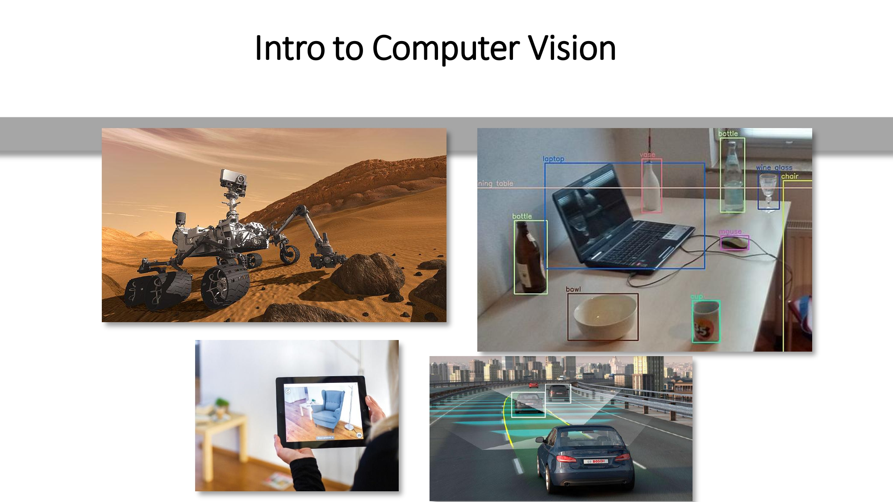
تطبيقات بتغيّر العالم:
هااض السلايد بجمع أهم 4 مجالات حالياً:
- Mars Rover: الروبوت اللي بيمشي على المريخ، بيستخدم الـ Vision عشان يكتشف الصخور ويميز الحفر، وإلا كان خبط من أول ثانية!
- Object Detection: زي الصورة اللي فيها اللابتوب والكأس.. الجهاز هون بحدد (Bounding Boxes) حول كل غرض وبعرف شو هو.
- Augmented Reality (AR): دمج عناصر افتراضية بالواقع بناءً على فهم الأبعاد.
- Self-Driving: السيارات اللي بتشوف كل شي حولها عشان تتحرك بأمان وتعرف مسار الشارع.
Imagine Your Smartphone
Slide 05
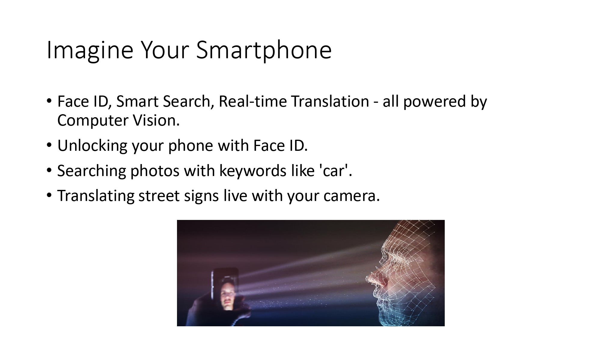
التلفون.. صيدلية CV:
تلفونك بطل مجرد وسيلة اتصال، صار "خبير رؤية". من الـ Face ID اللي بفتح
بلمحة وجه، للسيرش الذكي بالصور، وحتى الفلاتر اللي بتغير ملامحك بالثانية.. كله هذا بفضل خوارزميات
الـ CV اللي شغالة بالخلفية.
Everyday AI in Action
Slide 06
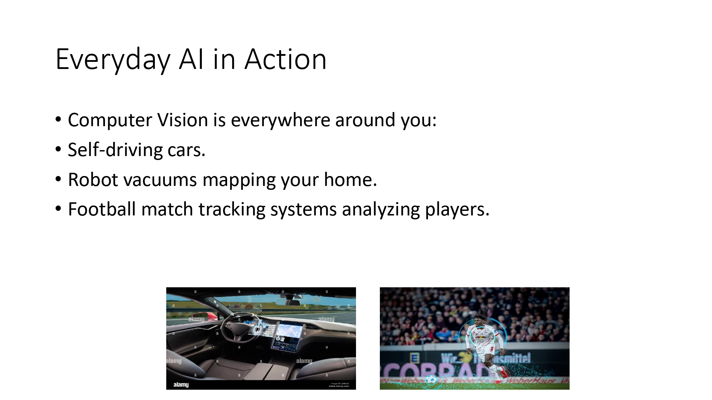
الذكاء بمحيطك اليومي:
الـ Computer Vision حواليك بكل مكان:
- Self-driving cars: السيارات اللي بتمشي لحالها.
- Robot vacuums: المكانس الروبوت اللي بتبني خريطة لبيتك عشان ما تخبط بالحيط.
- Match tracking: بالملعب، في أنظمة بتحلل حركة اللاعبين والكرة بالثانية عشان تعطي إحصائيات دقيقة.
Why Computer Vision Matters
Slide 07
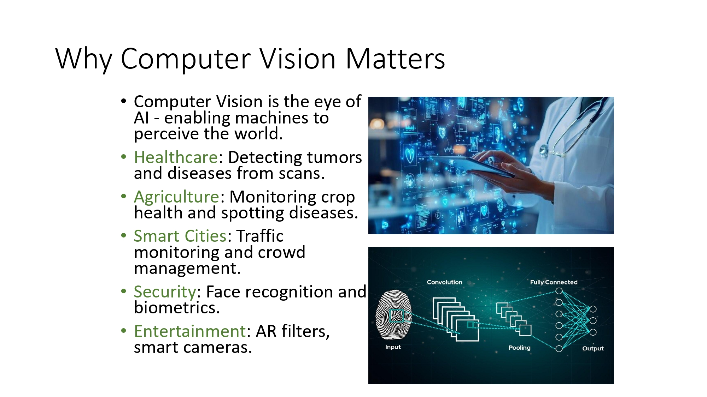
ليش الـ CV مهم لهالدرجة؟
لإنه "عين الذكاء الاصطناعي".. وبدونه الآلات بتضل عمياء. شوف الأثر في:
- Healthcare: كشف الأمراض والأورام من صور الأشعة.
- Agriculture: مراقبة صحة المحاصيل وكشف الآفات.
- Smart Cities: إدارة زحمة السير ومراقبة الحشود.
- Security: بصمة الوجه وأنظمة الحماية البايومترية.
- Entertainment: الفلاتر الرهيبة (AR Filters) والكاميرات الذكية اللي بتخلي الصور تطلع خرافية.
What You Will Learn
Slide 08
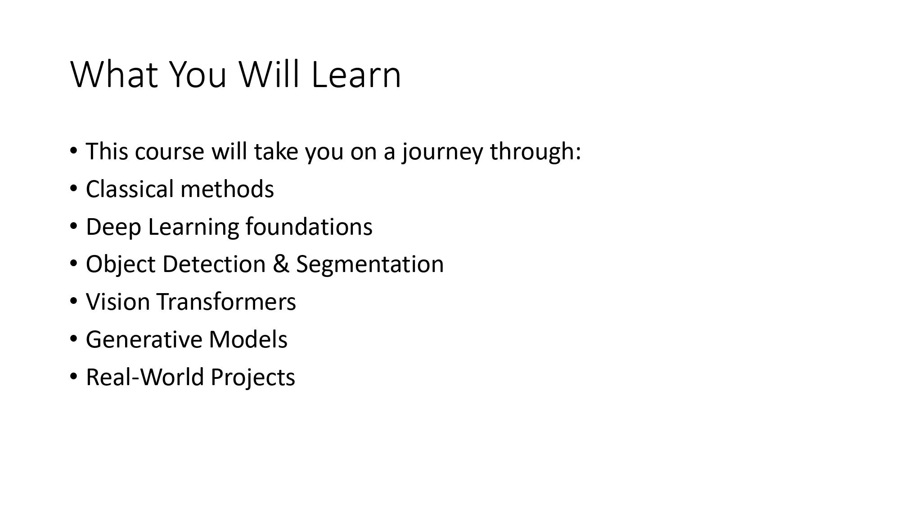
رحلتنا بهاي المادة:
رح نمشي سوا من الأساسيات للقمة:
- الأساليب الكلاسيكية (Classical methods).
- قواعد الـ Deep Learning.
- تحديد الأغراض وتقسيم الصور (Object Detection & Segmentation).
- الـ Vision Transformers والنماذج التوليدية (Generative Models).
- المشاريع الواقعية (Real-World Projects) اللي رح نطبقها عملياً.
Hands-On Experience
Slide 09
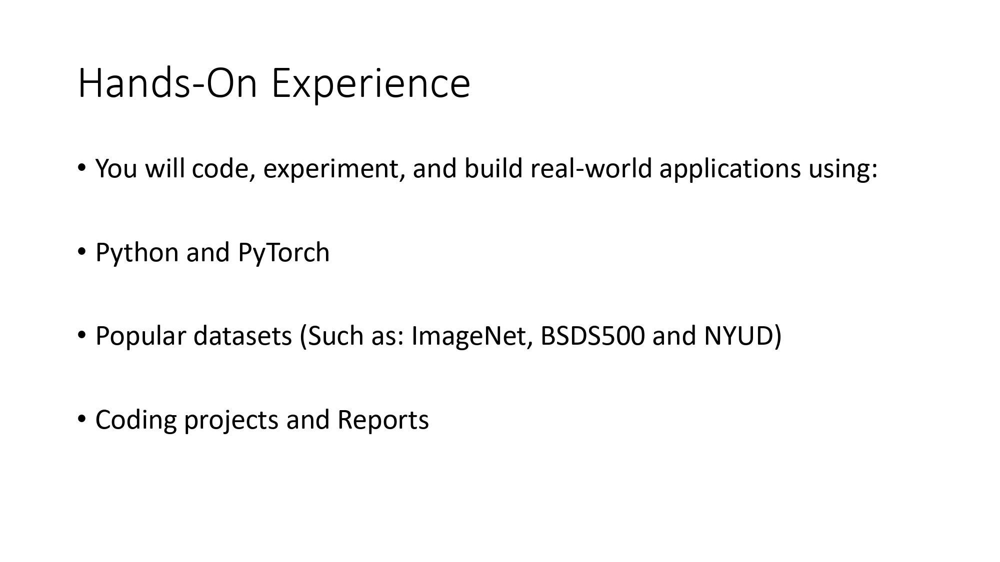
تطبيق عملي (مش بس نظري):
التركيز الأساسي هون هو على التطبيق العملي (Hands-on)، لإنك رح تبني
وتجرب بنفسك:
- استخدام لغة Python ومكتبة PyTorch لبناء نماذج الذكاء الاصطناعي.
- التدريب على Datasets حقيقية ومعروفة زي ImageNet، BSDS500، و NYUD.
- إنجاز مشاريع برمجية (Coding projects) وكتابة تقارير تقنية بتلخص شغلك.
The Vision for Future
Slide 10
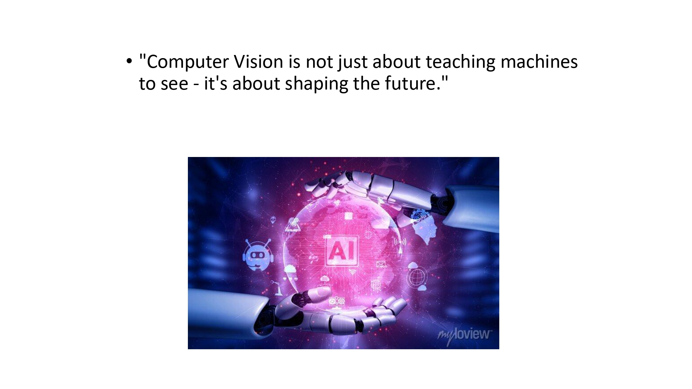
الرؤية للمستقبل:
"رؤية الكمبيوتر مش بس عشان نعلم الآلات تشوف.. هي عشان نشكل
المستقبل."
هااض هو الاختراع اللي رح يغير طريقة تفاعلنا مع كل شي حولنا.
Technical Tasks in CV
Slide 11
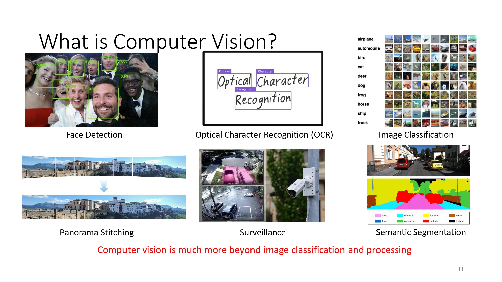
المهام التقنية اللي رح نبدع فيها:
عشان نوصل للذكاء الكامل، لازم نمشي بهاي المهام التقنية الأساسية:
- Face Detection: تحديد أماكن الوجوه في الصورة (زي ما بتشوف بالمربع الأخضر حول الوجوه).
- OCR: تحويل الكلمات المكتوبة في الصور لنصوص حقيقية نقدر نعدل عليها.
- Image Classification: تصنيف الصورة كاملة (يعني يقولك هاذ طير، سيارة، أو كلب).
- Panorama Stitching: دمج الصور المتداخلة مع بعض عشان نطلع بصورة وحدة واسعة وعريضة.
- Surveillance: أنظمة المراقبة اللي بتتبع الحركة وبتحدد الأماكن (زي مواقف السيارات).
- Semantic Segmentation: أدق أنواع التقسيم، اللي بيلون كل بكسل حسب صنفه (شارع، رصيف، شجر).
"رؤية الكمبيوتر أكبر بكثير من مجرد تصنيف ومعالجة صور.. هي فهم كامل للمشهد."
What is Computer Vision? (3D)
Slide 12
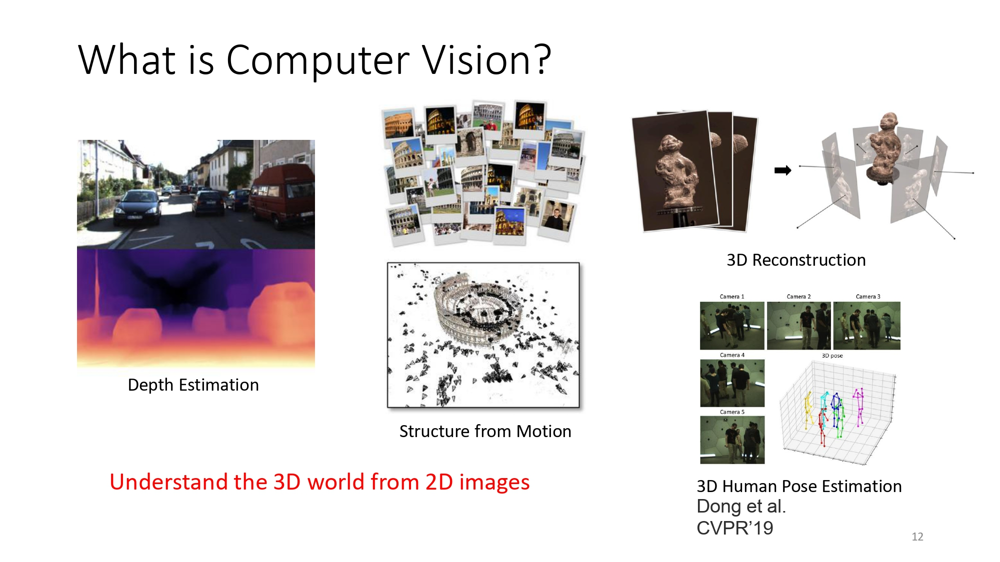
فهم العالم الـ 3D من صور 2D:
هاذ أهم تحدي.. كيف تخلي الكاميرا تفهم العمق (Depth
Estimation) وتبني نموذج ثلاثي الأبعاد للأشياء أو حتى لحركة البشر (Human Pose Estimation).
Human vs Computer Perception
Slide 13
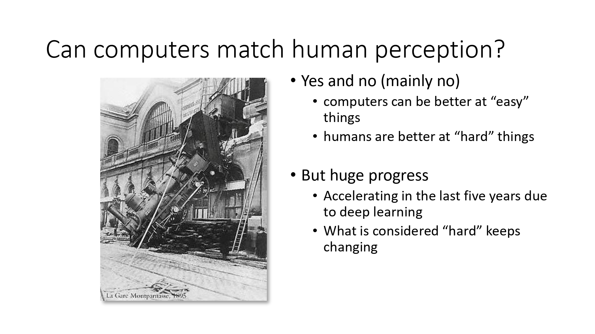
البشر vs الكمبيوتر:
هل الكمبيوتر ممكن يجاريك؟ اه ولأ.. الكمبيوتر صار أحسن بالمهام "السهلة" والتكرارية، بس لسا
البشر أشطر بالمهام "الصعبة" اللي بدها فهم عميق للسياق. بس مع الـ Deep
Learning، الفجوة قاعده تصغر يوم عن يوم.
Goal: 3D Shape of the World
Slide 14
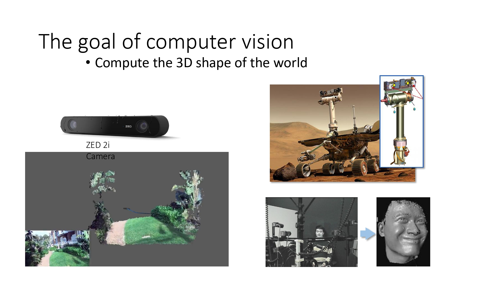
إعادة بناء العالم بالـ 3D:
📍 ليش الـ 3D مهم؟
الكمبيوتر لو شاف الصورة بس كـ "بكسلات" مسطحة، ما رح يقدر يمشي بممر أو يمسك غرض. هااض
السلايد
بيورجينا كيف الكاميرات المتطورة (زي الـ ZED 2i) بتقدر تحول
الصورة
لـ Point Cloud (مجموعة نقاط بتمثل الأبعاد الحقيقية).
Recognize Objects & People
Slide 15
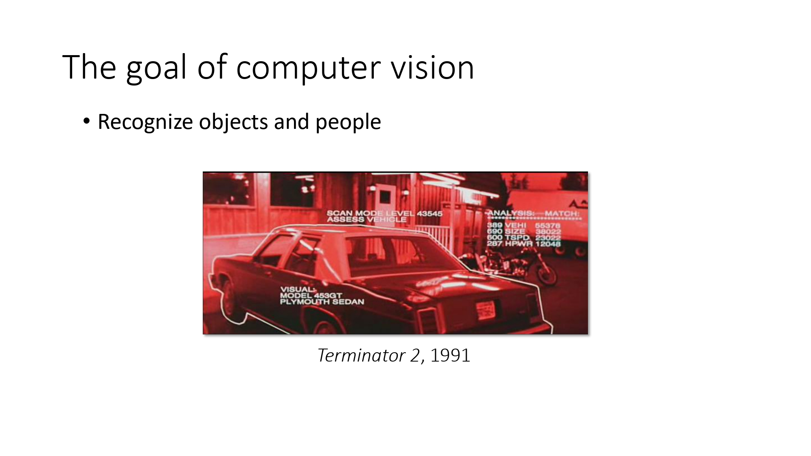
التعرف الذكي (Terminator Style):
بطل الموضوع خيال علمي.. أنظمة الـ Object Recognition صارت تقدر
تحدد كل
شي حول الروبوت بدقة خرافية، وهذا اللي بخلي الروبوتات تفهم وين هي ومع مين بتتعامل.
Complex Scene Understanding
Slide 16
فهم المشاهد المعقدة:
تحدي الـ Scene Parsing هو إنك تفصل كل غرض عن الثاني في صورة
مليانة
تفاصيل (ناس، سيارات، مباني). هاذ بيتطلب ذكاء اصطناعي يقدر يربط السياق ببعضه.
Image Enhancement
Slide 17
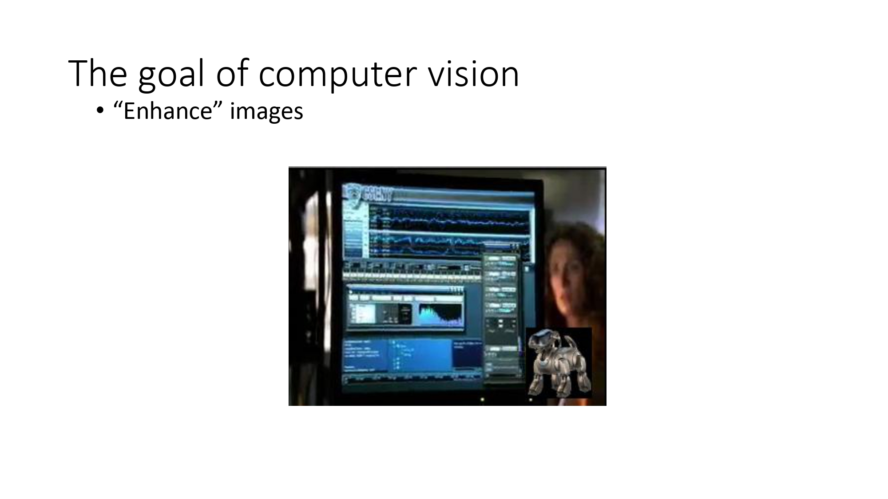
تحسين الصور (Enhancement):
تغيير جودة الصور الضعيفة وتوضيحها (Super Resolution) صار
حقيقة. بنقدر
نشيل "الغبشة" ونضيف تفاصيل ما كانت موجودة أصلاً بفضل التدريب العميق.
CV in Forensics
Slide 18-20
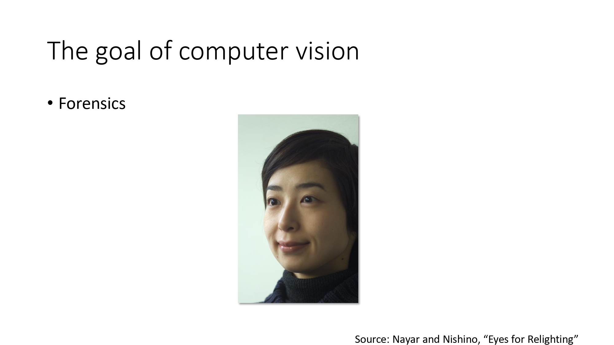
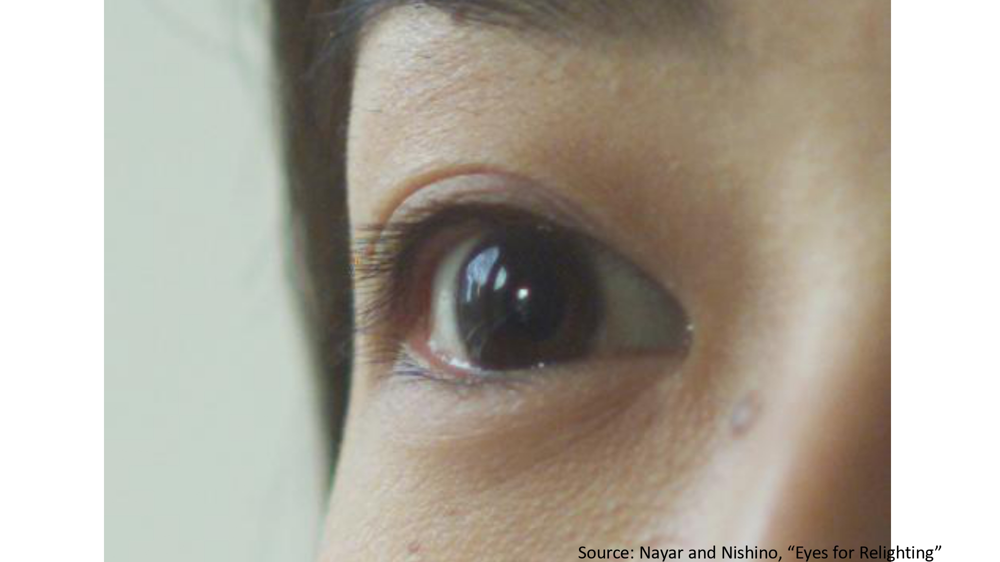
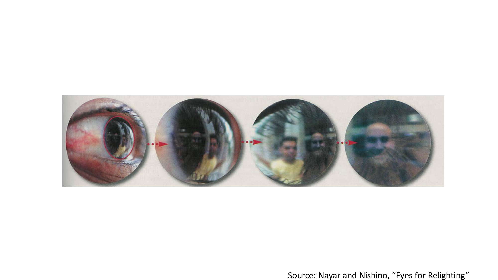
العيون كمرايا للواقع:
تقنيات Forensics بتسمح لنا نحلل انعكاس الضوء في بؤبؤ العين
عشان نعرف
مين كان واقف قدام الشخص أو شو كانت الإضاءة بالغرفة. هاض إعجاز تقني بساعد بالتحقيقات.
Computational Photography
Slide 21
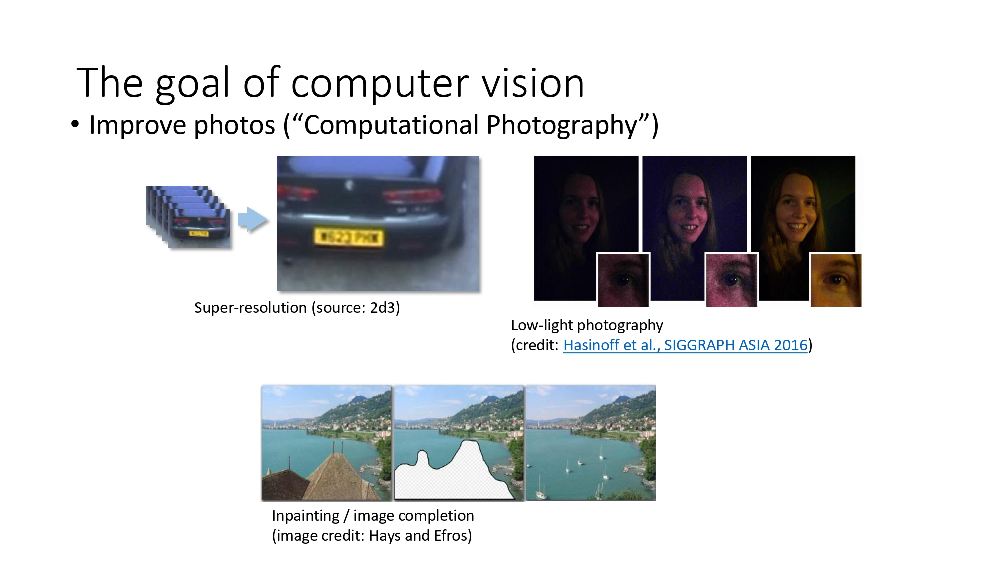
التصوير الحسابي:
الهدف هون هو تحسين الصور باستخدام التقنيات الحسابية (Computational
Photography)، وشوفوا هالسحر شو بعمل:
- Super-resolution: توضيح الصور اللي دقتها ضعيفة.. شوفوا كيف صورة نمرة السيارة تحولت لبيانات واضحة نقدر نقرأها.
- Low-light photography: التصوير في الإضاءة الخافتة.. الكاميرا بتعالج النويز وبتحسن الألوان عشان تطلع صورة واضحة جداً حتى لو المكان عتمة.
- Inpainting: ميزة "الممحاة السحرية".. بتمسح أي غرض من الصورة والـ AI بكمّل مكانها الخلفية بدقة خرافية ولا كأنه كان في شي.
Why Study CV?
Slide 22
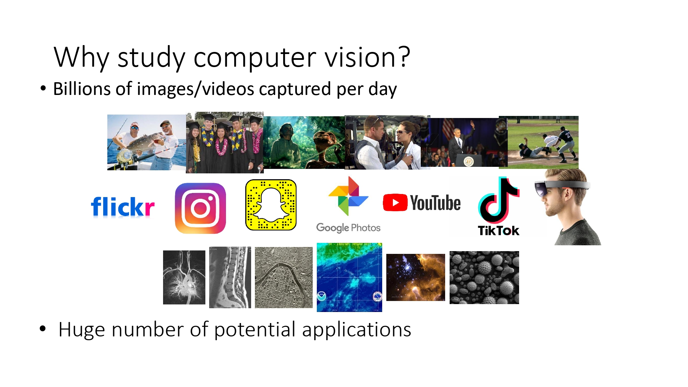
الطلب العالمي:
كمية الصور والفيديوهات اللي بتترفع كل ثانية مهولة.. المستحيل بشرياً تحليلها، لهيك الـ Computer Vision هو أسرع مجال نمواً في سوق العمل حالياً.
Digitizing the World (OCR)
Slide 23
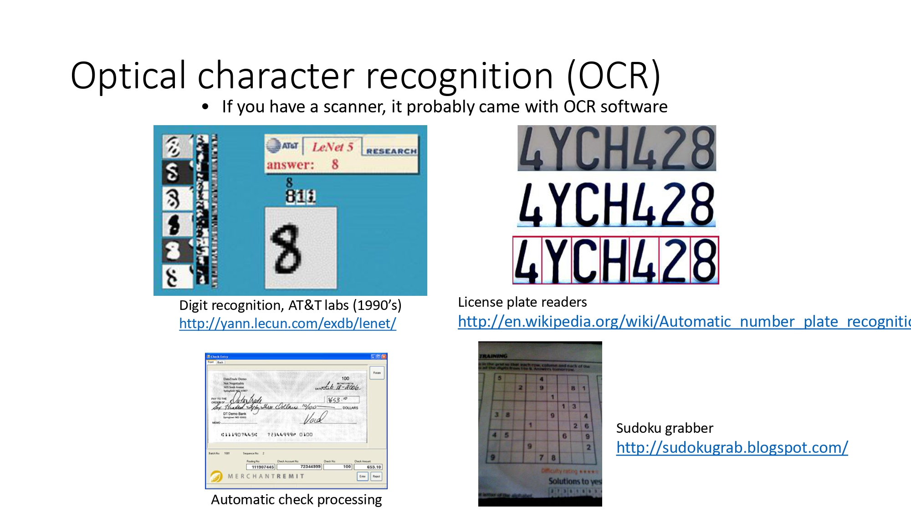
رقمنة النصوص:
من قراءة أرقام الشيكات لنمر السيارات، الـ OCR بختصر وقت وجهد
بشري ضخم
وبحول الورق لبيانات رقمية قابلة للبحث.
Face Analysis
Slide 24-25
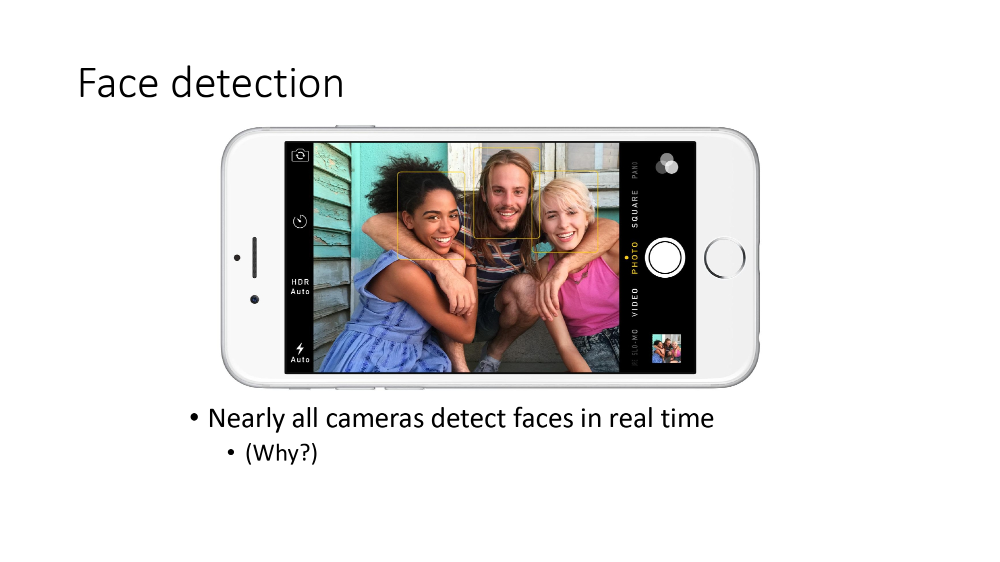
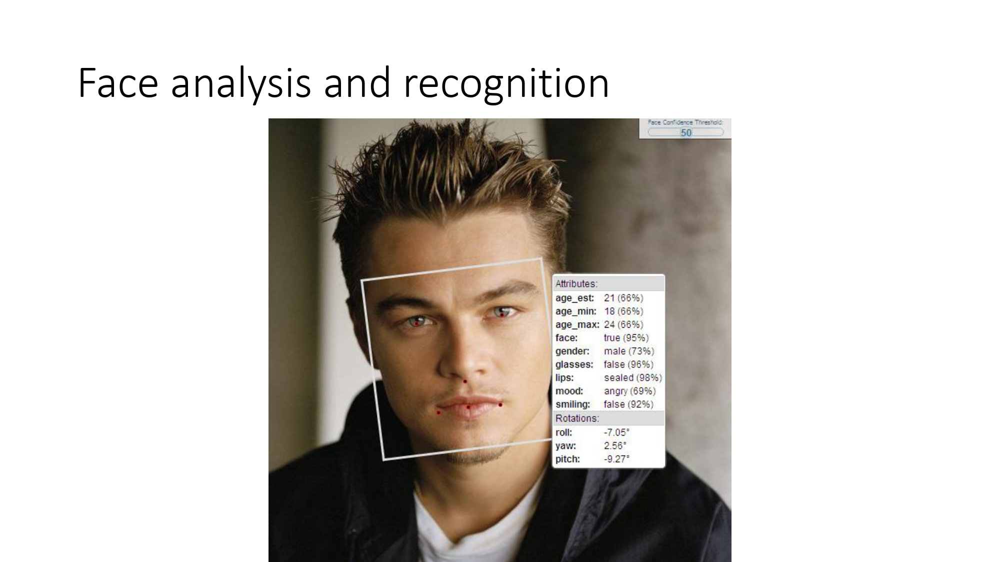
تحليل الوجوه والمشاعر:
الـ AI هسا بيقدر يتوقع عمرك، جنسك، وحتى إذا إنت مبسوط أو زعلان
من
ملامح وجهك بس.
Biometrics
Slide 26-27
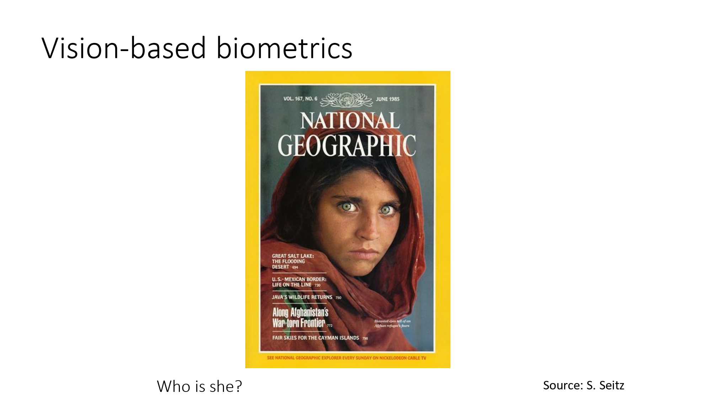
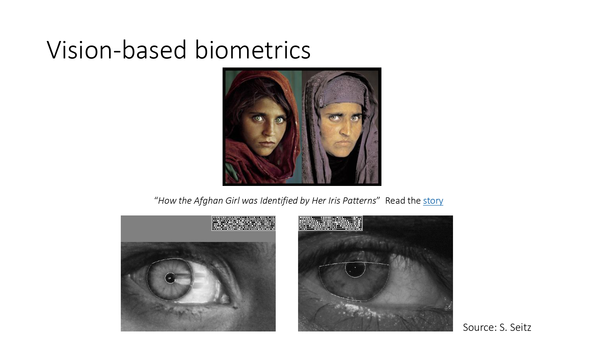
سحر قزحية العين (القصة الحقيقية):
قصة "شربات جولا" (الفتاة الأفغانية) هي وحدة من أقوى الأمثلة على قوة الـ CV.. بسنة 1984، تصورت صورة تاريخية بعيونها الخضراء الحادة. بعد 17 سنة من
التعب والزمن اللي غيّر ملامح وجهها بالكامل، رجعوا يدوروا عليها.
لا ملامح وجهها ظلت زي ما هي، ولا حدا كان متأكد.. بس اللي ما خذلها هو الـ Iris Scan. بصمة قزحية عينها ظلت "بصمة سرية" للأبد، ولما الكمبيوتر قارن قزحية عينها بالصورة القديمة، أكد إنها هي نفسها بنسبة 100%.
الخلاصة: وجهك ممكن يتغير مع السنين، بس عيونك بتضل الحقيقة الوحيدة اللي الكمبيوتر ما بخطئ فيها!
لا ملامح وجهها ظلت زي ما هي، ولا حدا كان متأكد.. بس اللي ما خذلها هو الـ Iris Scan. بصمة قزحية عينها ظلت "بصمة سرية" للأبد، ولما الكمبيوتر قارن قزحية عينها بالصورة القديمة، أكد إنها هي نفسها بنسبة 100%.
الخلاصة: وجهك ممكن يتغير مع السنين، بس عيونك بتضل الحقيقة الوحيدة اللي الكمبيوتر ما بخطئ فيها!
FaceID
Slide 28
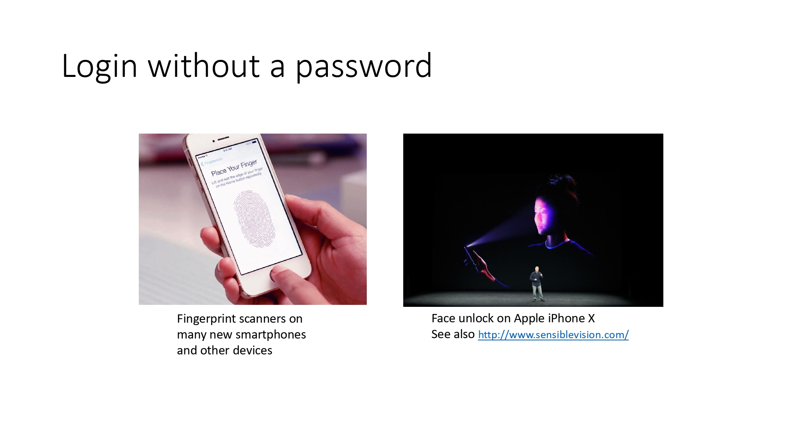
الدخول بدون كلمة سر (Biometric Login):
التطور وصل لمرحلة إنك ما بتحتاج تحفظ كلمات سر صعبة، السلايد بيورجينا أهم طريقتين للأمان الحيوي:
- بصمة الإصبع (Fingerprint Scanners): التقنية اللي صارت متوفرة بكل الموبايلات والأجهزة الحديثة، وبتحلل تعرجات إصبعك الفريدة عشان تفتح الجهاز بثانية.
- بصمة الوجه (Face Unlock): اللي تميزت فيها أبل بـ iPhone X، وهون الـ FaceID بيسقط 30 ألف نقطة غير مرئية على وجهك عشان يبني خريطة 3D دقيقة، ويتأكد إنك الشخص الحقيقي مش مجرد صورة أو قناع.
Nature Identification
Slide 29

استكشاف الطبيعة:
تطبيقات زي Merlin بتعرف نوع أي عصفور من صورته بس، وهذا بيتطلب
دقة
عالية جداً لتمييز الأنواع المتشابهة بالريش.
Medical AI
Slide 30-31
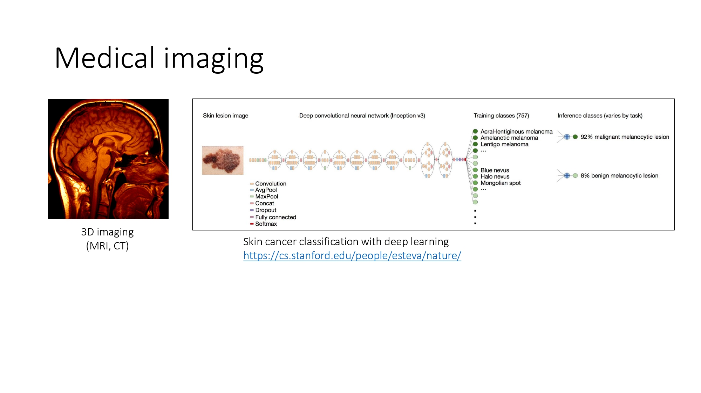
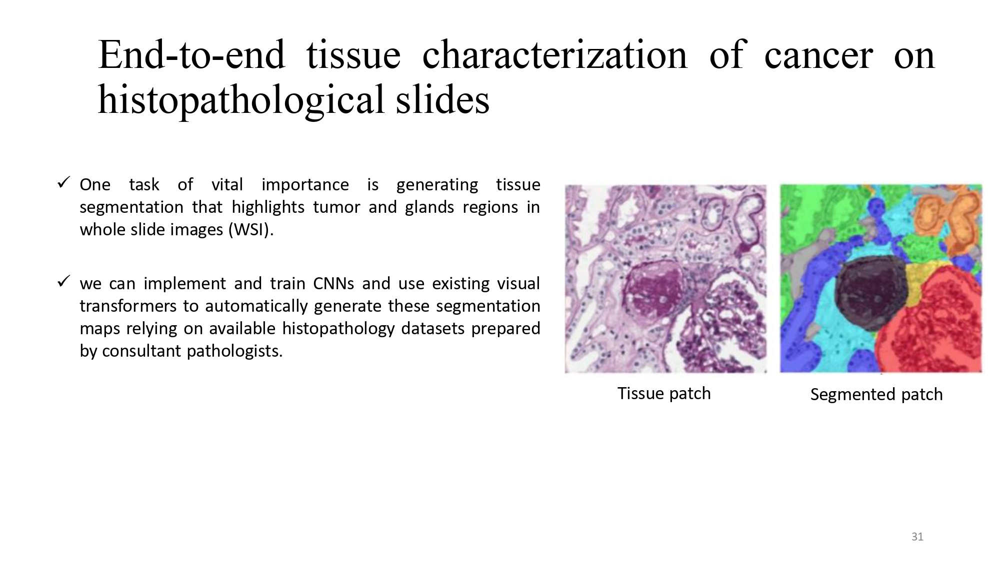
ثورة الطب:
تحليل الأنسجة المسرطنة وتحديد أماكن الأمراض بصور الأشعة صار أدق وأسرع، والـ AI صار رفيق أساسي لأي دكتور أشعة.
State of the Art (SOTA)
Slide 32
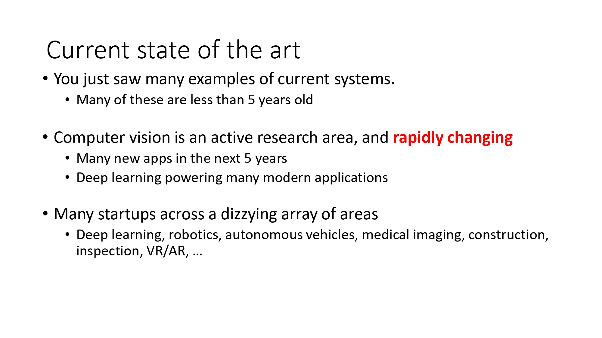
مستوى العلم اليوم (State of the Art):
كل اللي شفناه من أمثلة وتقنيات، أغلبها ما صارله 5 سنين طالع! المجال هاض بفور فوران وعم يتغير
بسرعة الصاروخ، وشوفوا شو الوضع حالياً:
- سرعة النمو: اللي بنشوفه اليوم هو مجرد البداية، والـ 5 سنين الجايين رح يشهدوا انفجار في التطبيقات الجديدة.
- Deep Learning: هو المحرك اللي معطي هاي "الذكاء" الخارق لكل أنظمة الرؤية الحديثة.
- سوق العمل والـ Startups: مئات الشركات الناشئة عم تطلع
يومياً في مجالات خرافية زي:
- الروبوتات والسيارات ذاتية القيادة (Autonomous Vehicles).
- التشخيص الطبي وتطبيقات الـ Medical Imaging.
- فحص جودة التصنيع والواقع الافتراضي (VR/AR).
Why it's Difficult?
Slide 33-34
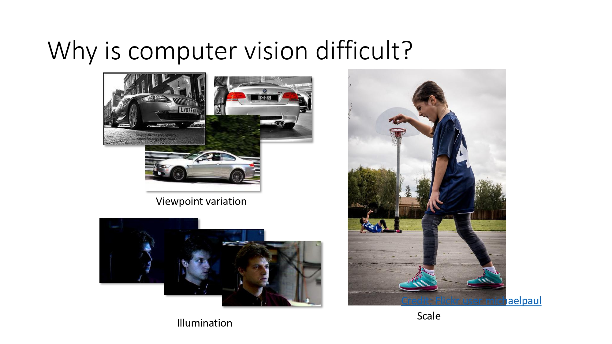
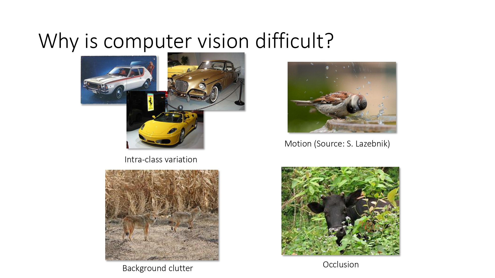
لو سألت حالك ليش الـ CV صعب؟ الجواب هو إن الكمبيوتر بشوف بس "أرقام
بكسلات".. وشوف هالعوامل كيف بتغير هاي الأرقام تماماً:
- Viewpoint variation: زاوية التصوير بتغير شكل الغرض.. السيارة من قدام غير من الجنب غير من ورا، ومع هيك لازم الـ AI يعرف إنها نفس السيارة.
- Illumination: الإضاءة بتلعب دور كبير.. الشخص نفسه بملامحه ممكن يظهر بشكل مختلف تماماً لو الإضاءة كانت جانبية أو قوية أو خافتة.
- Scale: الحجم والبعد.. الشجر أو الناس ممكن يظهروا كبار لو قريبين، أو مجرد نقط صغيرة لو بعاد، والكمبيوتر لازم يفهم هاض الفرق.
Classical CV
Slide 35-36
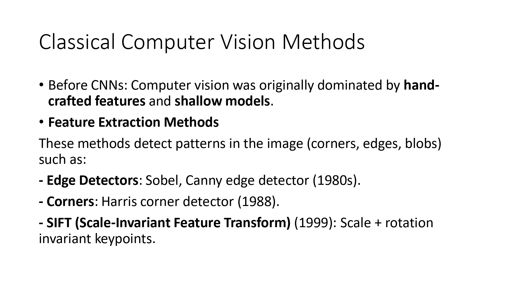
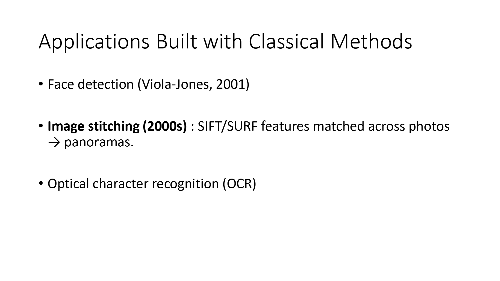
العصر الكلاسيكي (Classical Methods):
قبل ما تسيطر الـ Deep Learning، كان العلم بيعتمد على ميزات احنا
بنصممها يدوياً (Hand-crafted features). شوفوا كيف كنا نشتغل:
- استخراج الميزات: كنا ندور على الحواف (Edges) والزوايا (Corners) باستخدام خوارزميات زي Sobel و Canny.
- خوارزمية SIFT: ثورة بـ 1999، لإنها خلت الكمبيوتر يميز الأغراض حتى لو تغير حجمها أو دارت.
- أهم التطبيقات:
- Viola-Jones (2001): أول نظام حقيقي كشف الوجوه بسرعة البرق.
- Image Stitching: الطريقة الليكنا نجمع فيها الصور عشان نطلع البانوراما.
- أنظمة الـ OCR البدائية.
CNN Revolution
Slide 37-38
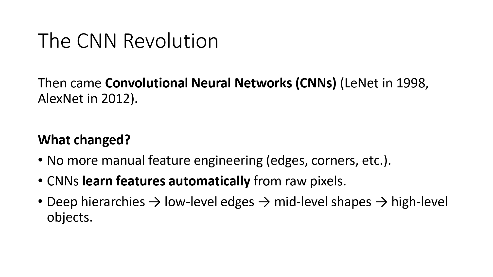
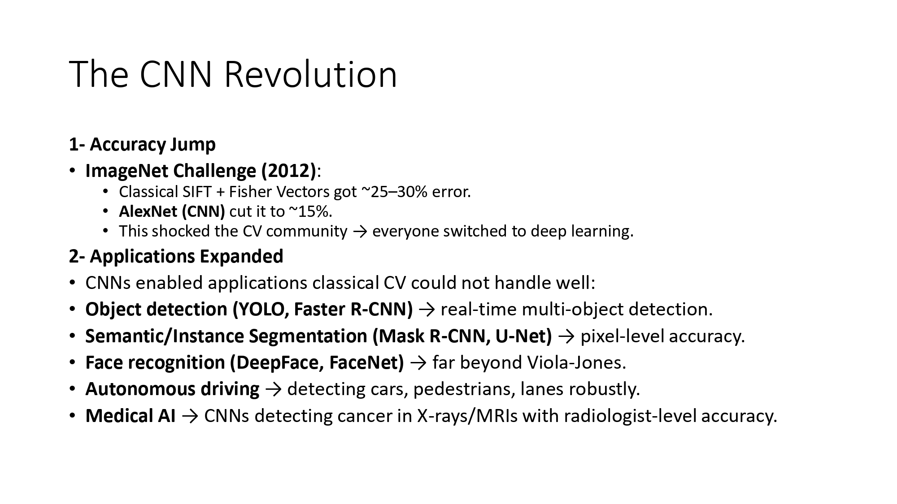
ثورة الـ CNN: البداية الحقيقية للذكاء:
سنة 2012 كانت "نقطة التحول" في تاريخ البشرية والكمبيوتر.. هون بلشت ثورة الـ Convolutional Neural Networks اللي غيرت كل قواعد اللعبة:
- شو اللي تغير؟
- بطلنا "نهندس" الميزات يدويًا (No more manual engineering).. الـ CNN صارت تتعلم لحالها من البكسلات الخام.
- التسلسل الهرمي الذكي: الشبكة بتبلش تفهم الحواف البسيطة، بعدين الأشكال المتوسطة، وفي النهاية بتعرف "الغرض" كامل (سيارة، وجه، أو كلب).
- قفزة الدقة (2012): في تحدي ImageNet، الطرق الكلاسيكية كانت بتغلط بنسبة 30%، بس لما إجا AlexNet، نزل نسبة الخطأ لـ 15%! هالصدمة خلت كل العلماء يتركوا الطرق القديمة ويحولوا للـ Deep Learning.
- انفجار التطبيقات: بفضل الـ CNN، صار عندنا تطبيقات ما كنا نحلم فيها:
- YOLO / Faster R-CNN: تمييز عدة أغراض بنفس اللحظة وبسرعة البرق.
- Autonomous driving: السيارات اللي بتمشي لحالها وبتميز المشاة والسيارات والمسارب.
- Medical AI: تشخيص السرطان من صور الأشعة بدقة بتفوق دكاترة الأشعة أحياناً.